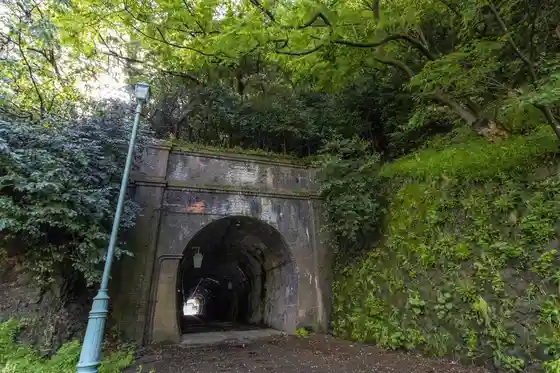
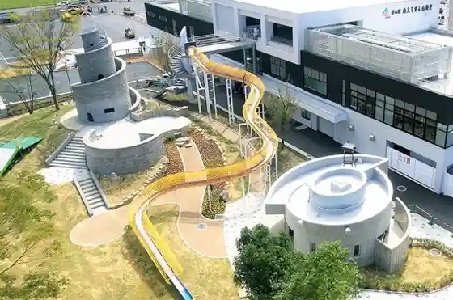
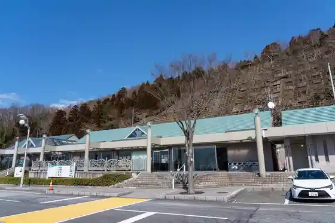
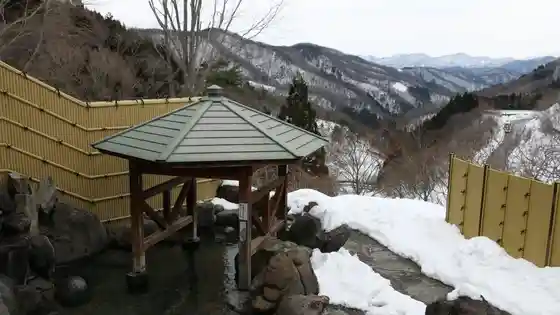

Kyu Hokurikusen Tonneru Gun
Minamiechizen, Fukui · 0770-21-8686 · Official / source link

Roadside Station Minami Echizen Sankai Sato
Minamiechizen, Fukui · 0778-47-3690 · Official / source link

Roadside Station Kono
Minamiechizen, Fukui · 0778-48-2880 · Official / source link

Imajo 365 Onsen Yasuragi
Minamiechizen, Fukui · 0778-45-1113 · Official / source link

Yashagaike
Minamiechizen, Fukui · 0778-45-0074 · Official / source link
Imajo Yado
Minamiechizen, Fukui · 0778-45-0074 · Official / source link
Kitamae Funanushi no Kan Ukon Ie
Minamiechizen, Fukui · 0778-48-2196 · Official / source link
Hachibuse Yama Campground (ASOBASE (Asobesu))
Minamiechizen, Fukui · 0778-67-7972 · Official / source link
Hana Hasu Park
Minamiechizen, Fukui · 0778-47-3368 · Official / source link
Itadori Yado
Minamiechizen, Fukui · 0778-47-8005 · Official / source link
Kono Shiisaido Onsen Yubae
Minamiechizen, Fukui · 0778-48-2388 · Official / source link
Sanchu Tonneru
Minamiechizen, Fukui · Official / source link
Soba no Hana
Minamiechizen, Fukui · 0778-45-1111 · Official / source link
Myo Yasushi Tera
Minamiechizen, Fukui · 0778-47-8005 · Official / source link
Koraki Beach (Minamiechizen)
Minamiechizen, Fukui · 0778-48-2240 · Official / source link
Imajo 365 Ski Area
Minamiechizen, Fukui · 0778-45-1115 · Official / source link
Tokumukan Kanto Sonan Ireihi Park
Minamiechizen, Fukui · 0778-47-8002 · Official / source link
Minamiechizen Culture Hall
Minamiechizen, Fukui · Official / source link
Imajo no Yado Kaneori
Minamiechizen, Fukui · 0778-45-0073 · Official / source link
Kono Beach (Minamiechizen)
Minamiechizen, Fukui · 0778-48-2240 · Official / source link
Uota Land Nanjo
Minamiechizen, Fukui · 0778-47-3711 · Official / source link
Nuka Beach (Minamiechizen)
Minamiechizen, Fukui · 0778-48-2240 · Official / source link
Chiiki Marutto Taikan Yado Tama Village Ya
Minamiechizen, Fukui · Official / source link
Kono Kitamae Funanushi Tori Gaido Tour
Minamiechizen, Fukui · 0778-48-2196 · Official / source link
Fufu Iwa Bozu Iwa Kigan Nippon Retsu Shima
Minamiechizen, Fukui · 0778-48-2240 · Official / source link
Ki no Me Toge
Minamiechizen, Fukui · 0778-47-8005 · Official / source link
Furusato Koryu Center
Minamiechizen, Fukui · 0778-45-1310 · Official / source link
Okunen Tera
Minamiechizen, Fukui · 0778-47-8005 · Official / source link
Koya Dam
Minamiechizen, Fukui · 0778-45-1122 · Official / source link
Reimbo Park Nanjo
Minamiechizen, Fukui · 0778-47-3711 · Official / source link
Ito Shi Garden
Minamiechizen, Fukui · 0778-47-8005 · Official / source link
Yuo Toge
Minamiechizen, Fukui · Official / source link
Bashaku Kaido
Minamiechizen, Fukui · Official / source link
Sanchu Toge
Minamiechizen, Fukui · Official / source link
Somayama Castle Ruins
Minamiechizen, Fukui · 0778-47-8005 · Official / source link
Sui Ke Castle Ruins (Hiuchi Castle Ruins)
Minamiechizen, Fukui · Official / source link
Rekishi Bunka Fureai Hall
Minamiechizen, Fukui · 0778-48-2881 · Official / source link
Fujikura Yama Nabekura Yama
Minamiechizen, Fukui · Official / source link
Hakuryu no Taki Park
Minamiechizen, Fukui · 0778-48-2240 · Official / source link
U Kan Shrine (Minamiechizen)
Minamiechizen, Fukui · 0778-47-8005 · Official / source link
Kyoto Jingoro Ie
Minamiechizen, Fukui · 0778-47-8005 · Official / source link
Kitaguni Kaido
Minamiechizen, Fukui · Official / source link
Fureai Shiisaido Park
Minamiechizen, Fukui · 0778-48-2111 · Official / source link
Showa Hall
Minamiechizen, Fukui · 0778-47-8002 · Official / source link
Gen Na Jizo
Minamiechizen, Fukui · 0778-47-8005 · Official / source link
Jigan Tera
Minamiechizen, Fukui · 0778-47-8005 · Official / source link
Yasha Taki
Minamiechizen, Fukui · 0778-45-0074 · Official / source link
Bushugaike (Minamiechizen)
Minamiechizen, Fukui · 0778-47-3414 · Official / source link
Kono Campground Medaka no Gakko
Minamiechizen, Fukui · 0778-48-2146 · Official / source link
Hana Hasu
Minamiechizen, Fukui · 0778-47-3414 · Official / source link
Masuya Dam
Minamiechizen, Fukui · 0778-45-1122 · Official / source link
Yashagaike no Autumn Leaves
Minamiechizen, Fukui · 0778-45-0074 · Official / source link
Shita Hase no Cave
Minamiechizen, Fukui · Official / source link
Hachibuse Yama
Minamiechizen, Fukui · Official / source link
Fudogataki
Minamiechizen, Fukui · 0778-47-3414 · Official / source link
Akatan Sabo Entei Gun
Minamiechizen, Fukui · 0778-47-8005 · Official / source link
Ho no Ga Yama
Minamiechizen, Fukui · Official / source link
Minamiechizen Town Hall
Minamiechizen, Fukui · 0778-47-3000 · Official / source link